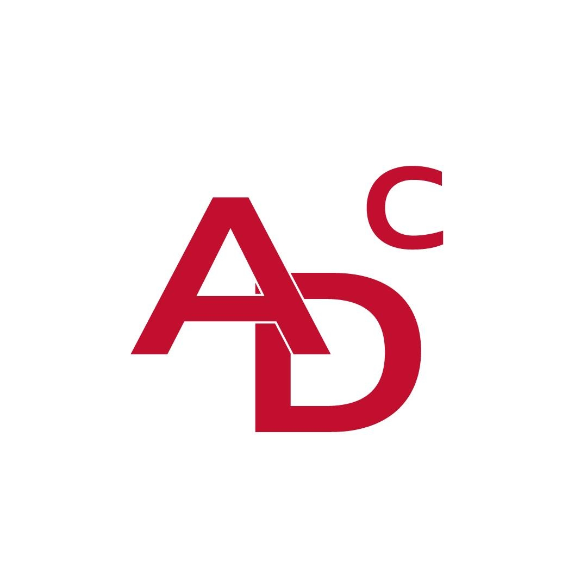

Szakmai háttér
Pillanatkép az eddigi utamról

Startup Alapító
godknows.ai
2025. okt. - Jelenleg
Egyesült Államok · Remote
Startup Alapító
AI-alapú oktatási platformot alapítottam tanulók és pályakezdők számára. Több AI eszközt integráltam: chat, összefoglaló, tanulókártya/kvíz készítő, lecke generátor és karrier launchpad.
Oldal megtekintéseGyakornok - Globális Csapat
Association of Educational Service Agencies
2025. szept. - Jelenleg
Egyesült Államok · Remote
AESA Globális Csapat
Weboldal fejlesztés és folyamatos fejlesztés. Videók szerkesztése és gyártása közösségi média csatornákhoz. Rendezvények szervezésének támogatása backend műveletek, regisztrációs rendszerek és IT infrastruktúra kezelésével.
Tudj meg többet
Független Vállalkozó
Tulipán Alapítvány
2025. szept. - Jelenleg
Egyesült Államok
IT & Webfejlesztés
A Tulipán Alapítvány weboldalának frontend és backend kezelése, adatkezelés és teljesítmény. Helyszíni IT támogatás rendezvények során, regisztrációs rendszerek és technikai logisztika kezelése.
Tudj meg többet
Szoftverfejlesztő Ösztöndíjas
Headstarter AI
2024. jún. - 2025. márc.
New York, NY · Remote
Szoftverfejlesztő Ösztöndíjas
Cloud workshopok vezetése 200 nagykövet részeként országszerte. Google, Tesla, Figma és Citadel mérnökök mentorálása. 5+ neurális hálózat fejlesztése Pythonban és alkalmazások TypeScriptben Vercelen.
Tudj meg többet
Elnök & Szakmai Összekötő
Battery Workforce Challenge - Charging Eagles
2023. szept. - 2025. máj.
Los Angeles, Kalifornia · Helyszíni
Charging Eagles Vezetőség
Kommunikáció projektmenedzserekkel, oktatókkal, szponzorokkal és szakmai partnerekkel. A Battery Workforce Challenge egy hároméves verseny, ahol hallgatók EV akkumulátor csomagokat terveznek, építenek és tesztelnek.
Tudj meg többet

Optimalizálás és szimulációs mérnök gyakornok
Audi Development Camp
2024. aug. · 1 hó
Győr, Magyarország · Helyszíni
Optimalizálás és Szimulációs Mérnök Gyakornok
A 2024-es Audi Development Camp Legjobb ESG Koncepció Díját nyertem el. A program során a meghajtás optimalizálásán dolgoztam az Audi SQ6 e-tron számára, kiegyensúlyozva a sebességet, gyorsulást és energiahatékonyságot.
Tudj meg többetHIL/SIL szoftver szimulációs mérnök gyakornok
Audi Development Camp
2023. júl. · 1 hó
Győr, Magyarország · Helyszíni
HIL/SIL Szoftver Szimulációs Mérnök Gyakornok
Szoftveres és hardveres szimulációs feladatokon dolgoztam az Audi E-tron számára, optimalizálva a járműszimulációt.
Tudj meg többet
Gyakornok
Biotia · Gyakorlat
2023. jún. · 1 hó
Budapest, Magyarország · Helyszíni
Gyakornok
Webfejlesztők és scrum vezetők munkáját figyeltem meg, elsajátítva a csapatmunka és kommunikáció alapvető készségeit a négyhetes gyakorlat alatt.
Tudj meg többet